Biomedical Engineer · Research Assistant, BioInnovation Research Group, BUET
I am a Biomedical Engineer and Research Assistant at the BioInnovation Research Group, Bangladesh University of Engineering and Technology (BUET). My work focuses on computational biomechanics, nonlinear finite element analysis (FEA), and simulation-based medical device design, with particular interests in computational ophthalmology and soft tissue mechanics.
My undergraduate thesis was on ocular mechanics, where I built a comprehensive eye model and tried to find out the cause of ocular damage. I have experience working on several industrial projects in Bangladesh and the UK. I worked on a collaborative project with DBL Pharmaceuticals, where I assessed their inhaler device. I have also worked as a Design and FEA Engineer at Vanguard Medical, UK, where I gained hands-on expertise in using FEA and design skills to develop and design products.
I am interested in expanding my FEA and biomechanics knowledge and skills through doctoral research, and in working for the betterment of society.
My undergraduate record at BUET and my English language test result.
Degree
Bachelor of Science in Biomedical Engineering
Bangladesh University of Engineering and Technology (BUET), Dhaka · Sessions 2019-20 to 2022-23 · Completed March 2025
157.5 credits completed. Thesis: A multi-component finite element model of the human eye to assess glaucoma risk under pathological conditions, graded A+.
Cumulative GPA
3.59 / 4.00
Project and Thesis (6 credits): A+
Courses closest to my research
Course
Title
Credits
Grade
BME 400
Project and Thesis
6.00
A+
BME 201
Biomechanics
3.00
A+
MME 297 / 298
Structure and Properties of Biomaterials (theory and sessional)
4.50
A+
BME 305
Physiological Control Systems
3.00
A+
BME 403
Medical Imaging
3.00
A+
BME 300
Biomedical Engineering Design I
1.50
A+
MATH 213
Differential Equations
3.00
A+
MATH 215
Linear Algebra
3.00
A
BME 350
Biomedical Engineering Design II
1.50
A
BME 205 / 206
Biofluid Mechanics and Heat Transfer (theory and sessional)
4.50
A−
BME 409
Tissue Engineering
3.00
A−
Official transcript
Four pages, issued by the Controller of Examinations, BUET, on 26 July 2025. Click a page to enlarge. Date of birth withheld.
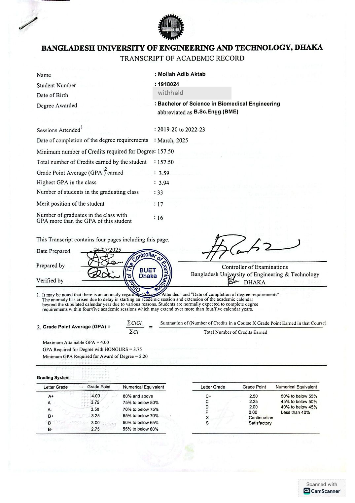
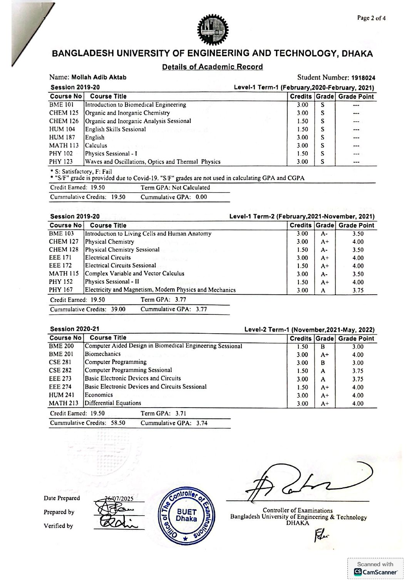
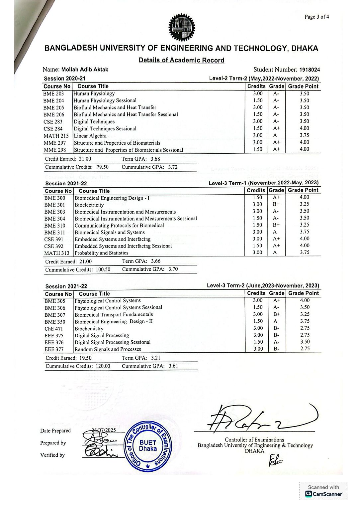
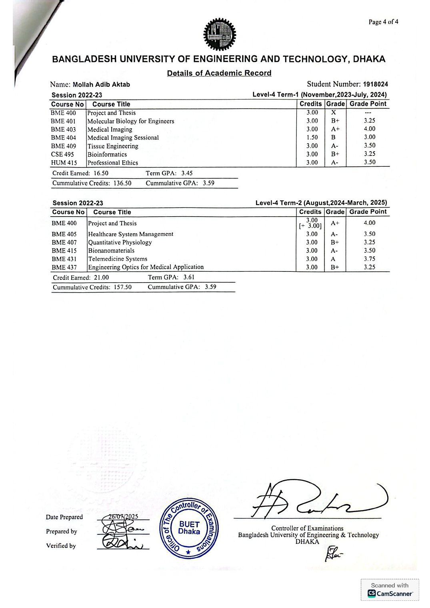
English language: IELTS Academic
Listening
7.0
Reading
7.0
Writing
6.5
Speaking
7.0
Overall
7.0
Bars are drawn on the 9-band scale. CEFR level C1. Test date 7 August 2026, centre BD050.
Test Report Form number 26BD505980AKTM050A. Universities can verify it at ielts.org/verify.
IELTS Test Report Form. Candidate ID and date of birth withheld.
Research and Publications
My thesis, my work as a research assistant and my academic design project, with the methods, the validation and the main results.
Undergraduate thesis2025Grade A+
A multi-component finite element model of the human eye to assess glaucoma risk under pathological conditions
Supervisor: Prof. Dr. Muhammad Tarik Arafat, Head, Department of Biomedical Engineering, BUET · With Dr. Mohammed A. Hannan, University of British Columbia
Glaucoma causes about 5% of all blindness that is not due to refractive error. It damages the optic nerve where it leaves the eye, at a thin mesh-like layer called the lamina cribrosa (LC).
Most earlier finite element models used a simplified eye shape and studied one load at a time. I built a model that includes the main tissues of the eye and looked at how eye pressure (IOP), intracranial pressure (ICP), the pressure difference across the LC (translaminar pressure, TLP), blood pressure and sclera stiffness each change the deformation and strain of the LC over a heartbeat.
15
tissues in the model
113,496
hexahedral elements
4
parametric studies
3 / 3
validation checks inside the measured range
Geometry and mesh
Fig. 1 The eye model built in SolidWorks: cornea, lens capsule, cortex and nucleus, zonules, sclera, choroid, retina, lamina cribrosa, pre- and post-laminar neural tissue, pia and dura mater, central retinal artery and orbital fat.
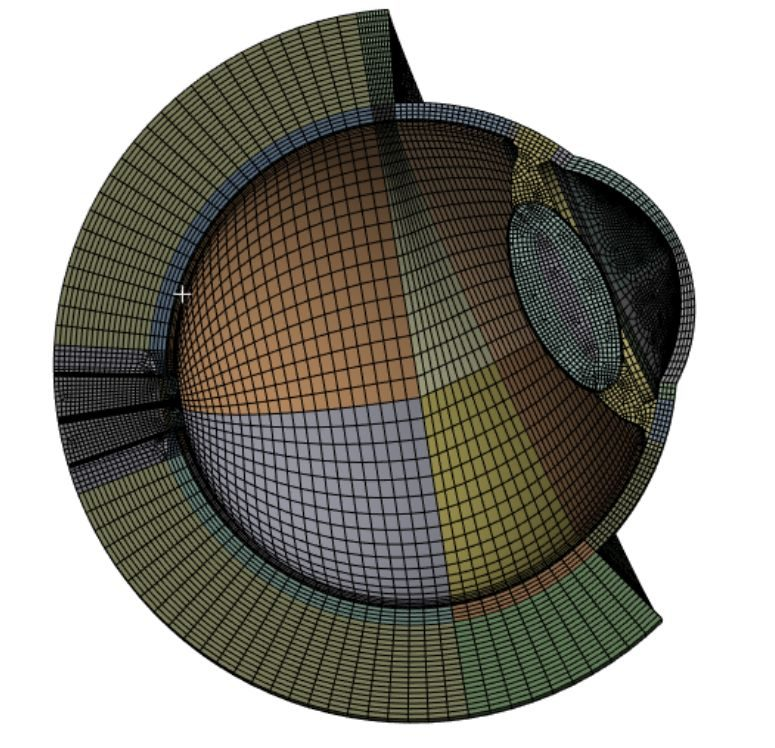
Fig. 2 8-node hexahedral mesh (113,496 elements, 124,238 nodes) made in Ansys and FEMAP, refined at the optic nerve head and checked with a mesh convergence study.
The sclera and the LC carry most of the load, so I fitted first-order Ogden hyperelastic models to experimental stress–strain data and checked each fit on a single-element model. The pia and dura mater used a Yeoh model, and the other tissues were linear elastic.
Tissue
Model
Parameters
Sclera
Ogden, 1st order
μ₁ = 15,818 Pa, α₁ = 56.8
Lamina cribrosa
Ogden, 1st order
μ₁ = 3.6×10⁵ Pa, α₁ = 10.4
Pia and dura mater
Yeoh
C₁ = 0.17, C₂ = 4.21, C₃ = 4.97 MPa
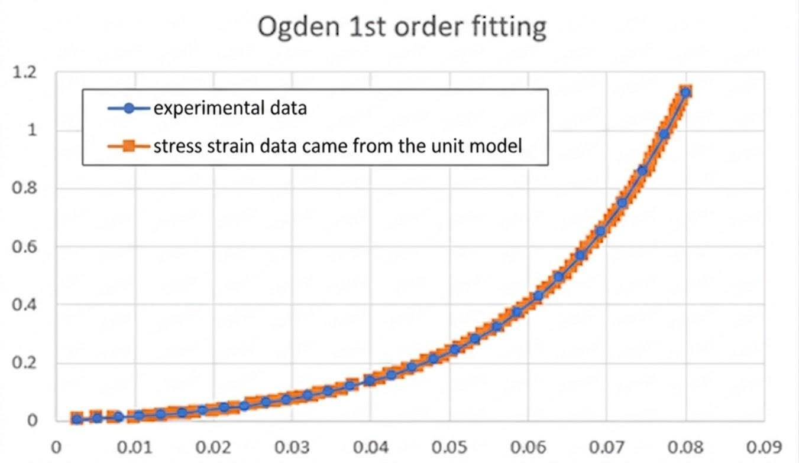
Fig. 4 Sclera: experimental data and unit-element model.
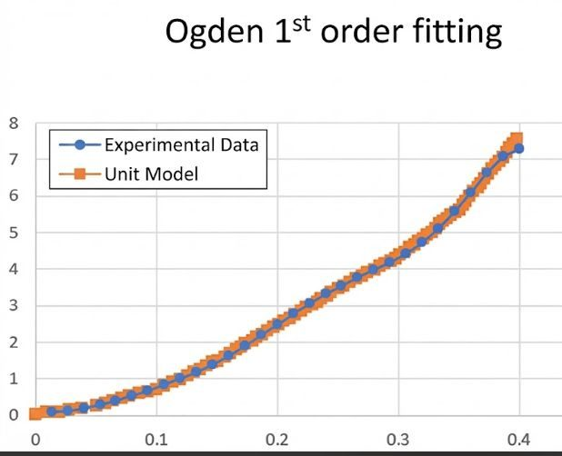
Fig. 5 Lamina cribrosa: experimental data and unit-element model.
Loads and boundary conditions
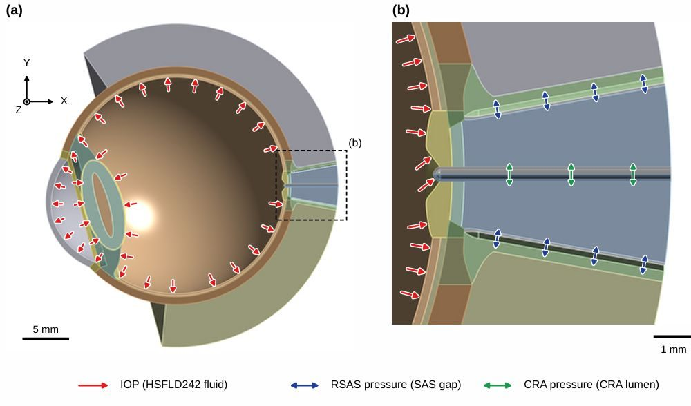
Fig. 6 The vitreous and aqueous humour are modelled as enclosed fluid with HSFLD242 elements (written in APDL), which apply IOP. ICP acts in the subarachnoid space and arterial pressure in the central retinal artery.
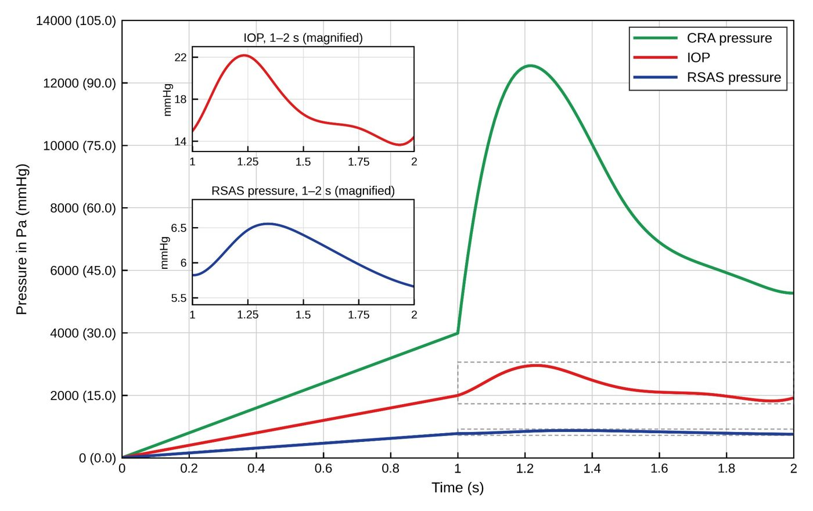
Fig. 7 Heartbeat-driven IOP, ICP and central retinal artery pressure (mean 62.1 mmHg) applied in a transient analysis. Load data from Kaskar et al.
Validation
Quantity
Measured / published
This model
LC strain, ex vivo, IOP 5 → 45 mmHg (Ling et al., 2019)
4.4 ± 1.8%
2.81%
LC mean strain at IOP 25 mmHg (Sigal et al., FE model)
1.53–5.30%
1.76%
LC displacement per heartbeat (Dragostinoff et al., 2013)
2–9 µm
7.0 µm
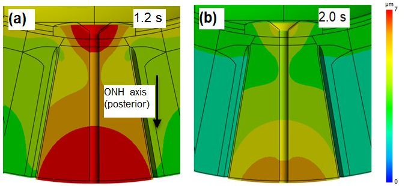
Fig. 8 LC displacement in the baseline case at (a) peak IOP, 1.2 s, and (b) the end of the cardiac cycle, 2.0 s.
Results
Fig. 9 Increase in LC deformation in each parametric study.
Study
Cases
1. Eye pressure
Mean IOP 15, 30 and 45 mmHg (normal, mild and extreme ocular hypertension)
Fig. 10 Maximum principal elastic strain of the LC rises with IOP.
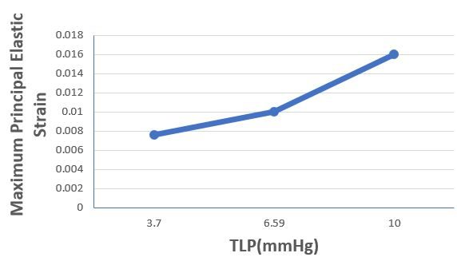
Fig. 11 Maximum principal elastic strain of the LC rises with translaminar pressure.
Conclusion. Eye pressure and the pressure difference across the LC are the main drivers of LC deformation. Blood pressure and sclera stiffness each changed it by less than 1%. Next, I would like to add the ocular pulse amplitude and blood flow, run fluid–structure interaction, and validate the model against animal experiments.
Research assistant2025Ansys FluentIndustry collaboration
Comprehensive study of a multi-dose dry powder inhaler: Sykonahaler vs Bexihaler
Simulation lead, BioInnovation Research Group, BUET, for DBL Pharmaceuticals Ltd · Supervisor: Prof. Dr. Muhammad Tarik Arafat
A dry powder inhaler only works if the airflow breaks up the drug powder into particles small enough to reach the deep lung. DBL Pharmaceuticals wanted to know which design does this better: their multi-dose Sykonahaler or the capsule-based Bexihaler.
I modelled the internal flow path of both devices in SolidWorks, meshed them with five inflation layers (y⁺ ≈ 1), and ran Ansys Fluent with the k-ω SST turbulence model and discrete phase particle tracking.
From the real device to the CFD model
Sykonahaler (multi-dose, blister)
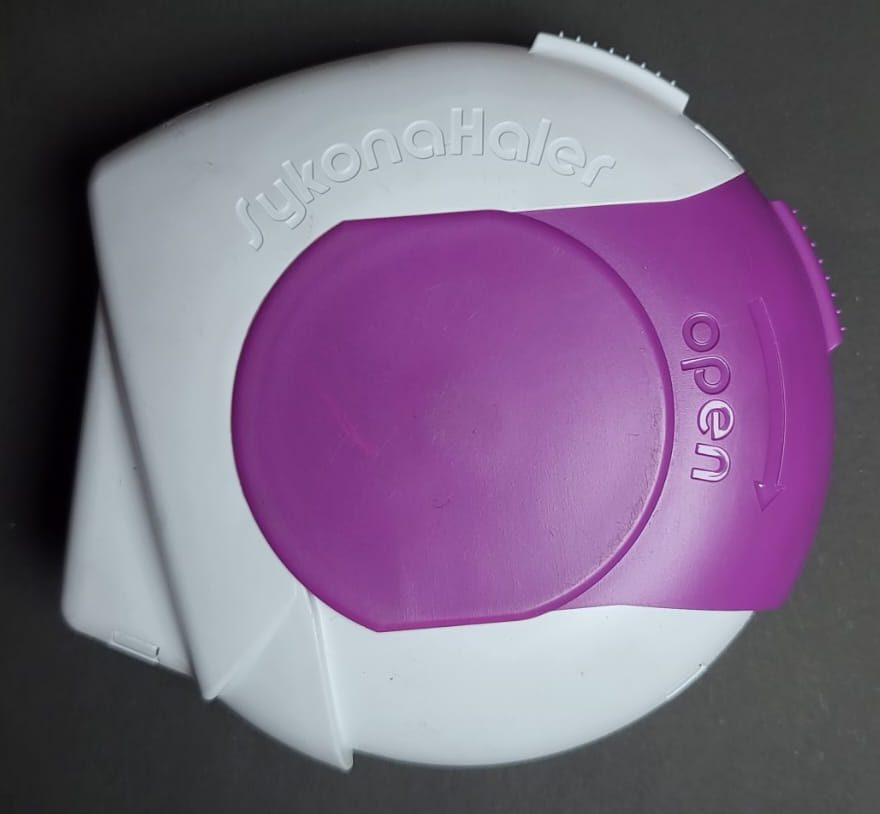
Device
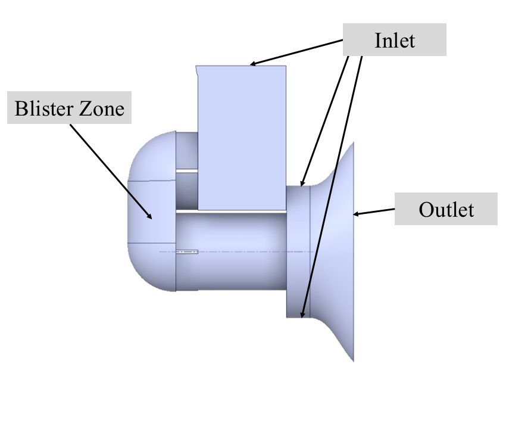
Flow geometry
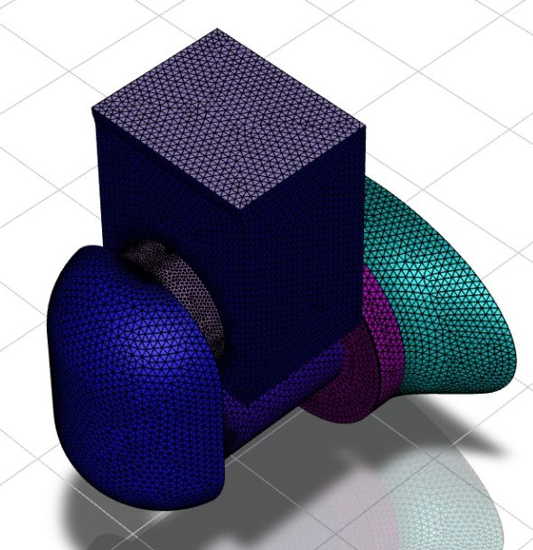
Mesh
Bexihaler (single dose, capsule)
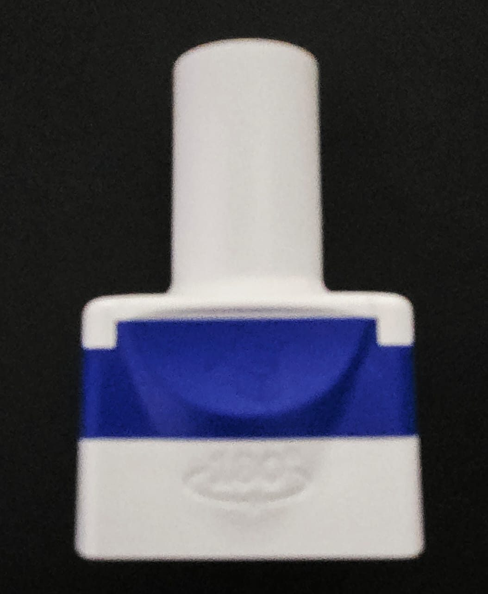
Device
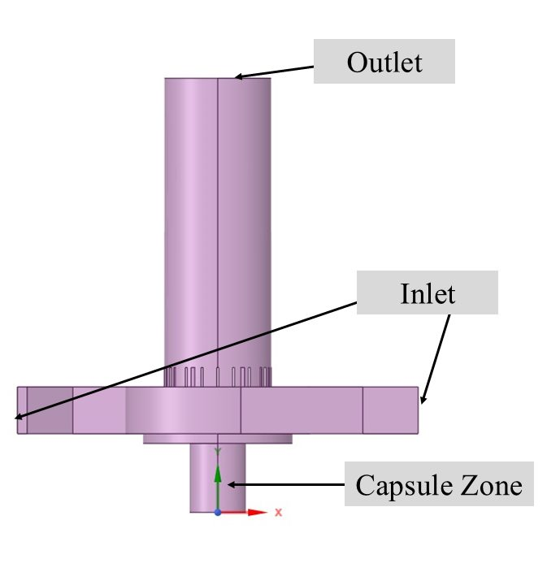
Flow geometry
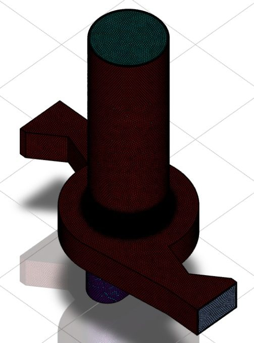
Mesh
Validation
Device
CFD flow at 4 kPa
Reference
Device resistance
Sykonahaler
63.9 L/min
Accuhaler®: 60 L/min
59.4 √Pa·s/L
Bexihaler
70.2 L/min
Measured: 71.04 L/min (1.2% error)
53.4 √Pa·s/L
Air and particle velocity
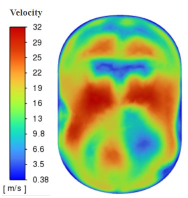
Sykonahaler at the blister
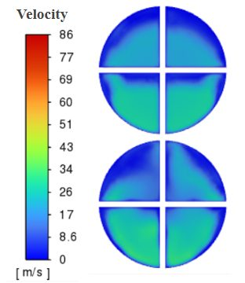
Sykonahaler at the gridSykonahaler section, peak above 80 m/s
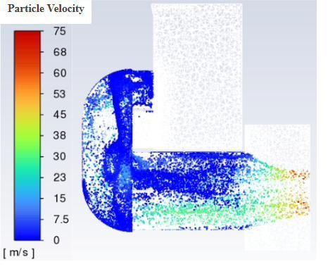
Sykonahaler particle velocity
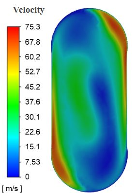
Bexihaler at the capsule chamber
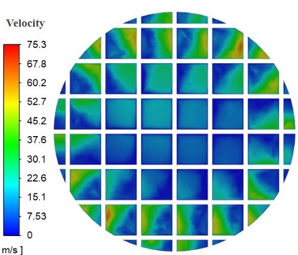
Bexihaler at the grid
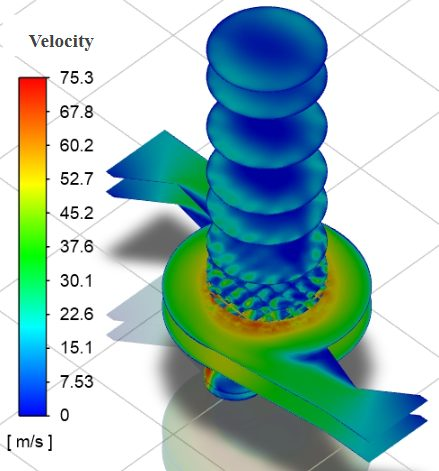
Bexihaler velocity field, peak about 75.3 m/s
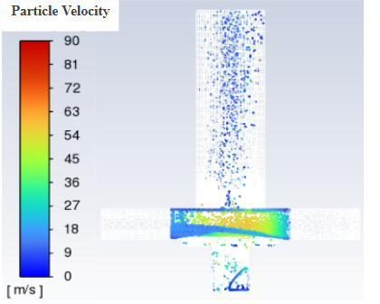
Bexihaler particle velocity
How long the particles stay inside
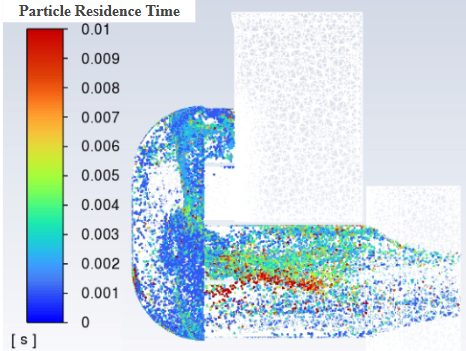
Sykonahaler: 1–10 ms, close to the 3 ms reported for the Accuhaler.
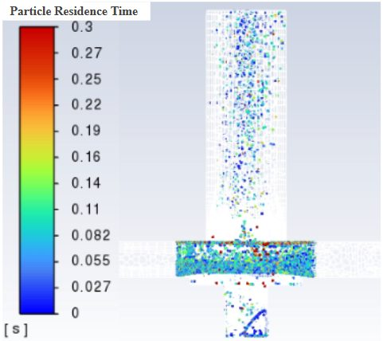
Bexihaler: up to 300 ms, with particles held in slow zones of the capsule chamber and grid.
Result. The Sykonahaler spreads high-velocity air over most of its blister and grid and lets particles leave quickly, so it breaks up the powder better. The slow zones found in the Bexihaler agree with the cascade impactor (NGI) data: 189 µg of drug stayed in stages 1–2 against 48 µg reaching stages 3–7.
Academic projectBME 350, 2023 → paper 2026Nonlinear FEABench testing
A prosthesis made in Bangladesh for below-knee amputees
Team: Marshal Ashif Shawkat, S. M. Mursalin Sonet, Adib Aktab, Md. Redwan Hossain · Supervisor: Md. Tazuddin Ahmed, Lecturer, Dept. of BME, BUET
Our team with the finished prosthesis at BUET.
Below-knee amputees in Bangladesh usually choose between a prosthesis they cannot afford and a cheap one that breaks. We set out to make one from materials you can buy locally.
The foot is a single-keel Bézier-curve design based on the Lower Leg Trajectory Error (LLTE) framework, CNC machined from cast nylon. The shank is an HDPE pipe and the socket is a clinically used PVC socket, all joined with nuts and bolts so any part can be replaced.
I ran the structural analysis: a nonlinear model in Ansys with plasticity and large deflection, validated against our bench tests, then used to check walking loads.
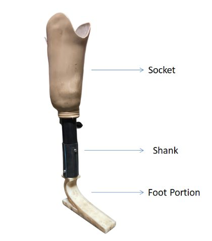
The real product: PVC socket, HDPE shank and nylon foot.
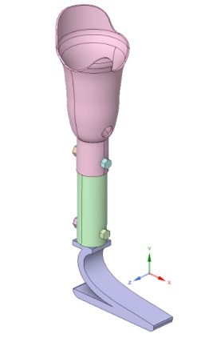
CAD assembly in SolidWorks.
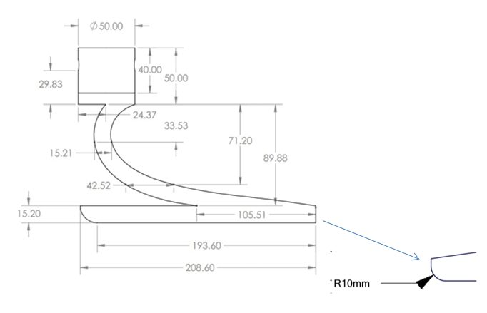
Foot profile from the LLTE design, with a 10 mm fillet near the tip.
Bench test and model validation
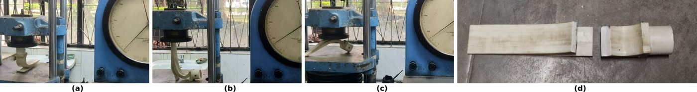
Fig. (a) Load on top, (b) at the tip, (c) at the back, (d) the foot after it broke.
Test
Load
Real foot
FE stress
FOS
Top surface
890 N
Did not break
56 MPa
1.30
Tip
3113 N
Did not break
23 MPa
3.26
Back
4270 N
Broke at the ankle
80.1 MPa
0.94
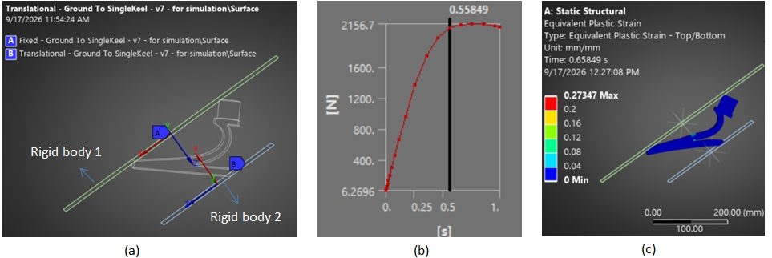
Back-load simulation: two rigid bodies, force reaching 4270 N, and plastic strain of 0.27 at the ankle.
The model breaks at the same load and in the same place as the real foot (nylon yield 75 MPa). The foot carried 4270 N before failing, about five times the 850 N reported for a 3D-printed foot.
Is it safe for walking?
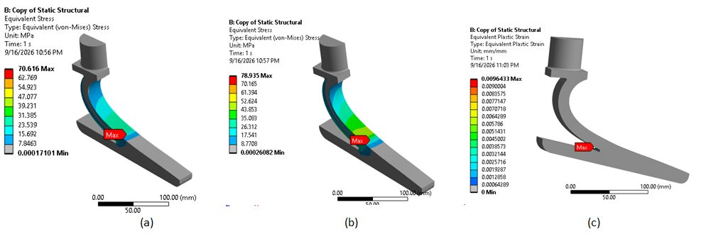
Heel strike: 70.6 MPa at 60 kg, 78.9 MPa at 80 kg, and plastic strain at 80 kg.
Phase
Load
FOS 60 kg
FOS 80 kg
Heel strike
1.1 × BW, 15° back
1.07
0.95
Mid-stance
0.8 × BW, vertical
2.41
1.79
Toe-off
1.2 × BW, 20° forward
4.78
3.52
Result. The foot is safe for a 60 kg user in all three phases of walking. For an 80 kg user the heel strike stress goes just past yield, so the next version needs a thicker ankle section or a larger heel radius. Material cost is 4,320 BDT per leg, against about 25,000 BDT for commercial legs in Bangladesh.
M. A. Aktab, M. A. Shawkat, S. M. M. Sonet, M. R. Hossain and M. T. Ahmed. “Design and structural validation of a low-cost prosthetic ankle-foot made from locally available materials.” Submitted to the 9th International Conference on Mechanical, Industrial and Energy Engineering (ICMIEE). SubmittedPDF
M. A. Aktab, M. A. Hannan and M. T. Arafat. “A multi-component finite element model of the human eye to assess glaucoma risk under pathological conditions.” Manuscript in preparation
Employment
Where I have worked as an engineer and researcher.
Vanguard Medical designs and manufactures critical care transport equipment in the UK, including critical care trolleys, emergency child restraints and bespoke designs. I worked with their design and manufacturing team on structural validation.
Ran crash, static and transient FEA to check medical transport devices against BS EN 1789 and SAE J3027.
Found stress, deformation and failure risks and proposed geometry and material changes to fix them.
Used hand calculations and tolerance stack-ups alongside FEA, and stayed in contact with the UK manufacturing team until each design was built.
The group develops simple healthcare solutions for clinical problems, working on wound care, drug delivery, tissue engineering and CFD of cardiovascular and neurovascular flow.
Simulation lead on the dry powder inhaler study for DBL Pharmaceuticals Ltd.
Prepare project proposals, technical documentation and research material for academic and industry projects.
Manage day-to-day lab activities.
Train junior researchers in Ansys, COMSOL and Mimics.
The connector must unlock with less than 2 lbf of finger force but stay locked under a 735 N pull-out load and 22.5 g acceleration.
A moment balance about the latch pin showed the original design failed: the pull-out load produced a latch force of −6.89 lbf, which pushes the latch open.
Revision 1 changed the contact so the load closes the latch. Revision 2 moved the key mass and spring, raising the acceleration needed to unlock from 31.5 g to 90.8 g.
A 0.2 mm worst-case tolerance study cut the key rotation needed to clear interference from 2.4° to about 1°.
Pipe clamp: chose a 12 mm natural rubber pad over nylon after a tolerance loop and nonlinear FEA. Lever force 58.2 N against an 80 N limit.
A universal joint passes rotation between two shafts that meet at an angle. I measured how much torque gets through and how stiff the joint is.
Checked the joint-probe method first on a gear pair with a known answer: hand calculation 0.55 N·m, probe 0.55 N·m.
With damping on the output shaft, 91–95% of the input torque reached the output.
A 1 N·m twist moved the joint 1.33 µm. A 675 N side load moved it 7.0 µm with a peak stress of 72.1 MPa.
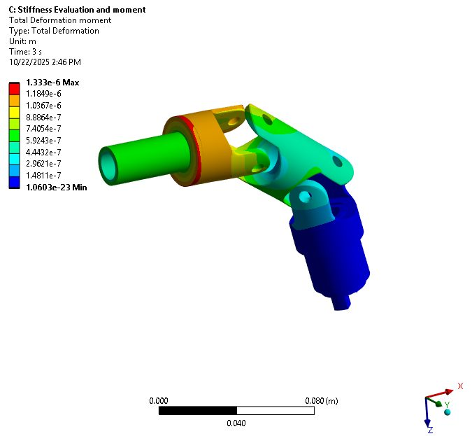
Deformation under 1 N·mStress under 675 N side load
Static structuralFrictional contact
Robotic hand: does the gripper damage the vial?
The vial has to be protected, so I checked whether a gear and linkage gripper deforms it when it closes.
100 N·mm closing moment at the drive gear, frictional contact between jaws and vial (µ = 0.75).
The vial moves about 2 mm with the jaws as one body and stays in the lowest stress band.
The peak stress sits on a sharp link corner, away from the vial. Next: a fillet there and a vial-only stress check.
Gripper model and closing moment
Total deformationMaximum principal stress
Ansys FluentTurbulent flow
Turbulent flow in an exhaust X-pipe (Porsche GT3 RS)
How the two exhaust streams mix in the crossover, where pressure is lost and where the flow is most turbulent.
StreamlinesPressurePathlinesTurbulent kinetic energy
Ansys FluentDiscrete phase model
How airborne droplets spread in a convention hall
Droplets released inside the hall were tracked to see where the ventilation air carries them.
Droplet pathlines coloured by particle ID.
Extracurricular
Photography, books and music.
Street photography
Through my lens
I shoot mostly black and white on the streets and railway lines of Bangladesh: fog, shadows and people passing through. I was Joint Secretary of the BUET Photographic Society and won second prize in the “Break the Circle” Season XII national photography contest.
Fog on the line1 / 12
Reading
Reader
I am an avid reader. Books are how I switch off from meshes and residual plots.
Music
Metallica, always
Metallica is my favourite band, and their records are usually playing while I work.